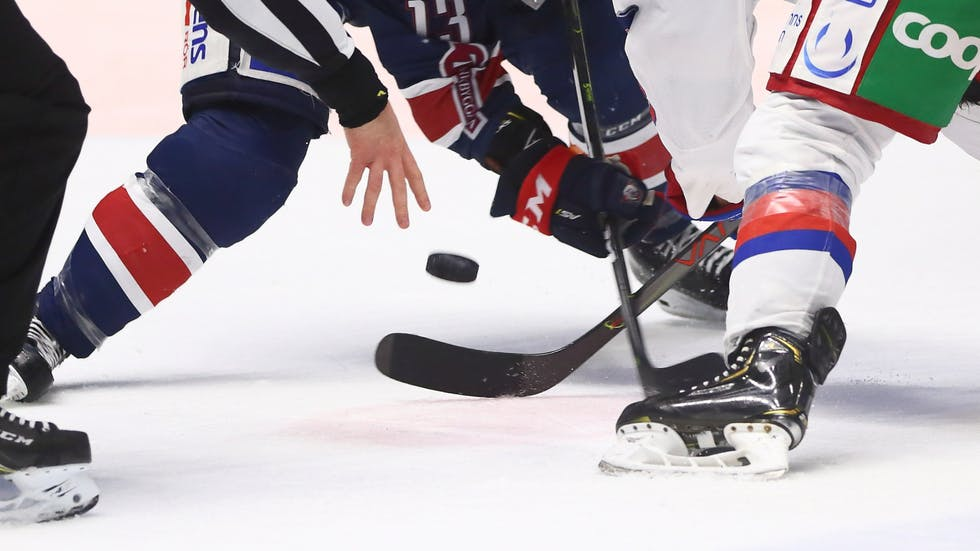
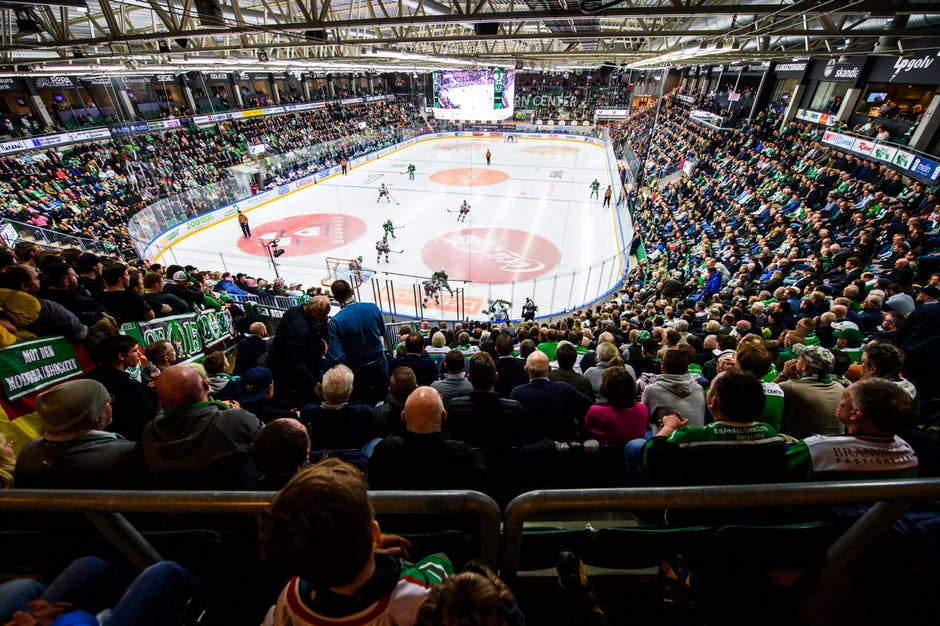
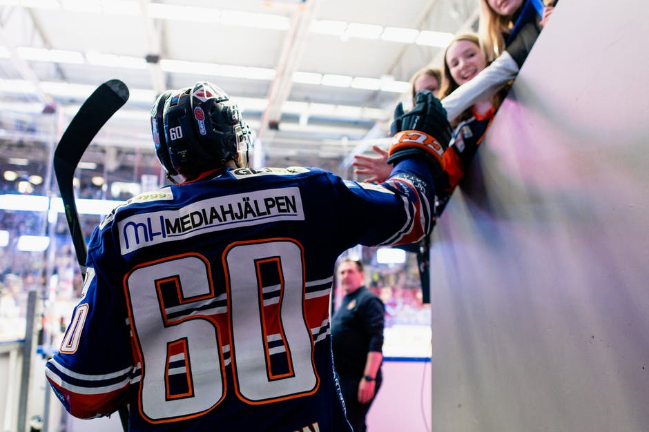

Ändringar i spelschemat till SHL 2020/2021
Följande fem matcher kommer att spelas på utsatt datum, men har fått nya starttider från kl 18:00 till kl 15:15.
- 14 november Malmö – Brynäs
- 16 januari Linköping - Oskarshamn
- 30 januari Linköping - Malmö
- 27 februari Linköping - Örebro
- 6 mars Linköping - Luleå
Följande match kommer att spelas på utsatt datum, men har fått ny starttid från kl 15:15 till kl 18:00.
- 19 september Örebro - Djurgården
- 20 oktober Linköping - Luleå
Observera att spelschemat 2020/2021 är med reservation för eventuella ändringar.
Jenny Silfverstrand blir ny VD i SHL
SHLs nuvarande VD Michael Marchal har under åren 2019 och 2020 ett tillförordnande som verkställande direktör i Svenska Hockeyligan (SHL). Styrelsen för SHL har nu utsett efterträdare och i höst tillträder Jenny Silfverstrand befattningen som VD i SHL. Jenny Silfverstrand är 47 år och är sedan 2013 VD i Djurgården Hockey.

"Engagemanget och viljan till att stötta sin klubb i dessa tider har varit helt otrolig"
Regeringen beslutade under onsdagen den 11 mars att begränsa publika möten med över 500 deltagare som ett led i Folkhälsomyndighetens förhöjda smittorisk gällande Coronaviruset. Därmed spelades matcherna under torsdagen den 12 mars utan publik.
På torsdagen meddelade SHL att SM-slutspelet skjuts upp till att starta vid en senare tidpunkt. Detta i samråd med Svenska ishockeyförbundet.
Under lördagen den 14 mars begärde SHL, i enighet med de fjorton klubbarna, att SM-slutspelet skulle ställas in för säsongen 2019/20 och lade i och med det fram en hemställan till Svenska Ishockeyförbundet som är de som tar beslut i frågan. Svenska Ishockeyförbundets styrelse beslutade sedan på söndagen den 15 mars att följa SHL:s begäran och säsongen var över.

Publiken skapar inramningen - tack för denna säsong!
Säsongen 2019/20 blev onekligen en speciell sådan – SHL:s SM-slutspel ställdes in på grund av coronavirusets utbredning och den sista grundserieomgången spelades dessutom inför tomma läktare. Det stoppade inte SHL-publiken från att ha skapat ännu en magisk säsong på läktarna dock. För tredje säsongen i rad ökar nämligen publiksnittet i SHL, trots en full omgång inför tomma läktare. Tillsammans med spelare, ledare, domare och olika funktionärer bygger publiken matchen till den sportupplevelse som SHL-hockeyn är.